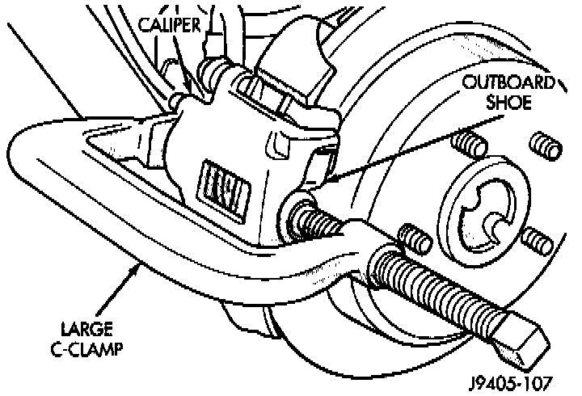
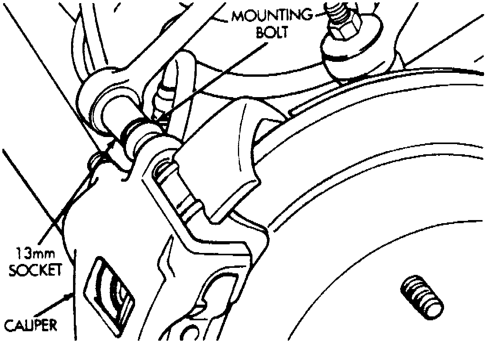

Rear
REMOVAL1. Raise vehicle and remove tire and wheel assemblies.

2. Press caliper piston into caliper bore with C-clamp.
Fig. 8 Rear Caliper Mounting Bolts:

3. Remove caliper mounting bolts.
4. Rotate caliper rearward by hand or with pry tool. Then rotate caliper and brake shoes off ledges of mounting bracket.
5. Remove caliper fitting bolt and disconnect rear brake hose at caliper. Discard metal washers on fitting bolt. Washers should be replaced and not reused.
6. Remove caliper from vehicle.
INSTALLATION
1. Verify that brake shoes are correctly positioned in caliper.
2. Position caliper over rotor and into bracket. Be sure brake shoe tabs are properly seated on mounting bracket ledges.
3. Connect rear brake hose to caliper. Use new washers on hose fitting and tighten hose fitting bolt to 24-38 Nm (18-28 ft. lbs.).
4. Check brake hose position before proceeding. Verify that hose is not twisted, kinked, or touching any suspension components.
Mounting Bolt Dimensions:

CAUTION: Check caliper bolt length before proceeding. If the bolts have a shank length greater than 67.6 mm (2.66 inches), they will contact the inboard brake shoe causing a partial apply condition.
5. Lubricate and install caliper mounting bolts. Start bolts by hand then tighten bolts to 10-20 Nm (7-15 ft. lbs.).
6. Fill and bleed brake system. Service and Repair
7. Install wheel and tire assemblies.
8. Lower vehicle.